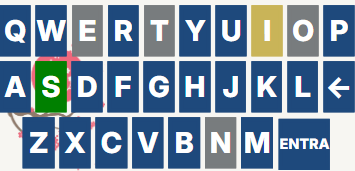

Como jogar?
Você tem 6 tentativas para tentar acertar a palavra.
Cada tentativa deve ser uma palavra válida de 5 letras. Cada letra deverá ir em um quadradinho.
Depois de cada tentativa, as cores dos quadradinhos do tabuleiro vão te mostrar quão perto você está de acertar a palavra.
A letra "S" faz parte da palavra, pois está com o quadradinho verde.
A letra "I" faz parte da palavra, mas em uma posição diferente, pois está com o quadradinho amarelo.
Nenhuma das letras da palavra "arcar" faz parte da palavra, pois todos os quadradinhos estão cinza.

Se a letra no teclado está em azul, significa que ela ainda não foi testada.
Se ela está em amarelo, ela foi testada, mas na posição errada na palavra.
Se ela está em verde, ela já foi testada na posição correta. Se ela está cinza, ela foi testada, mas não existe na palavra.